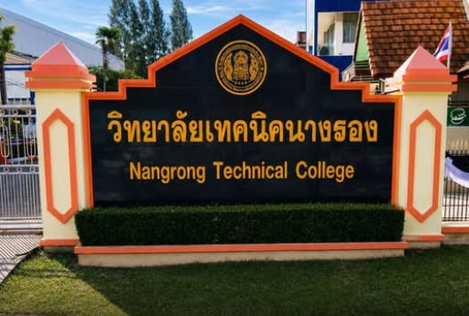

ข้อมูลติดต่อ
ติดต่อสอบถามเรื่องการรับสมัคร หลักสูตร และข้อมูลอื่น ๆ ได้ตามช่องทางด้านล่าง
วิทยาลัยเทคนิคนางรอง
- ที่อยู่
- [เลขที่ 1 หมู่ 1 ถนนบ้านเก่า-แพงพวย ตำบลนางรอง อำเภอนางรอง จังหวัดบุรีรัมย์ 31110 [รหัสไปรษณีย์]
- โทรศัพท์
- [06221191270]
- โทรสาร
- [044 631 556]
- เว็บไซต์
- [ https://nrtech.ac.th/] Facebook
- [วิทยาลัยเทคนิคนางรอง]
- เวลาทำการ
- วันจันทร์ – ศุกร์ เวลา 08.30 – 16.30 น.[08.30 – 16.30 น.]

ข้อมูลที่ไฮไลต์สีเหลืองคือจุดที่ต้องกรอกให้ตรงกับข้อมูลจริงของวิทยาลัย แล้วลบคลาส todo ออก